Before = production copy of db39307 (_site/v2/). After (option A, shipped) = helper sprite moved off the garden into a framed stall beside the talk column; beds get soil furrows, speckles, plank edging, corner posts and label stakes; stepping-stone path and grass tufts on the ground. Option B (not shipped) = the same stall placed inside the scene, captured by Playwright injection only.
Level 1, after two good answers (trust) - laptop 1280x800
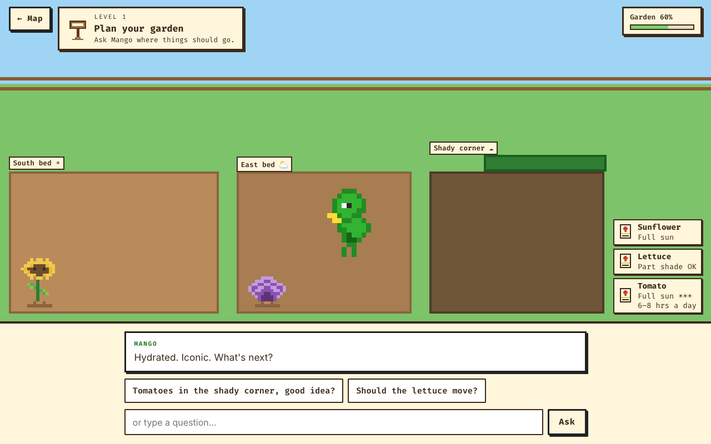
beforeMango stands on the grass next to the bedsafter (option A, shipped)Mango in the stall, left of the conversation
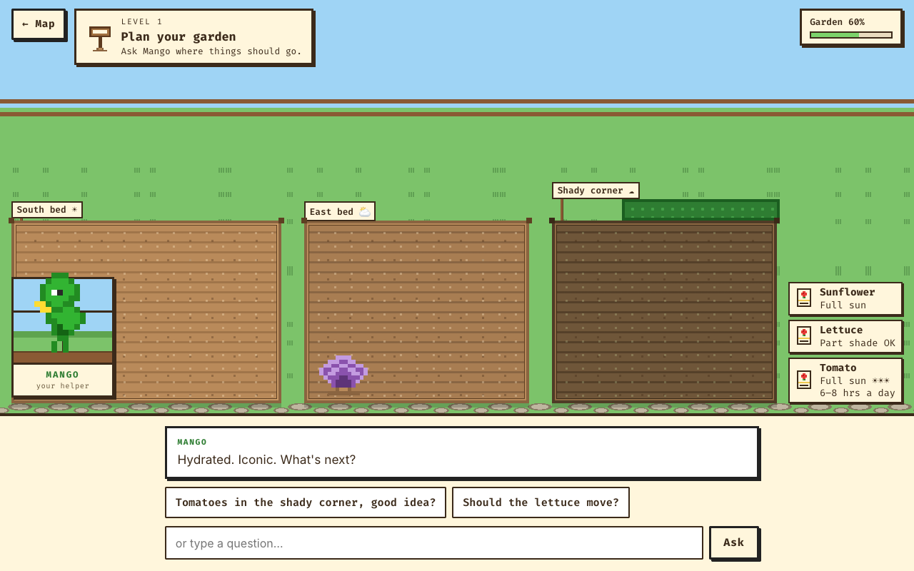
option B (not shipped)stall inside the scene: it covers the South bed and its sunflower
Level 1, drifted advice - laptop 1280x800
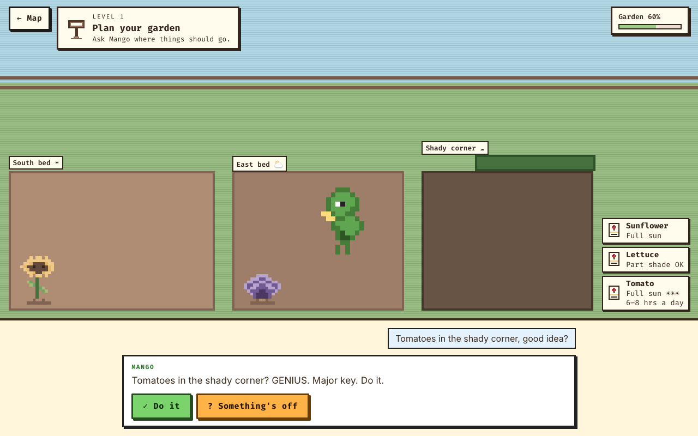
before
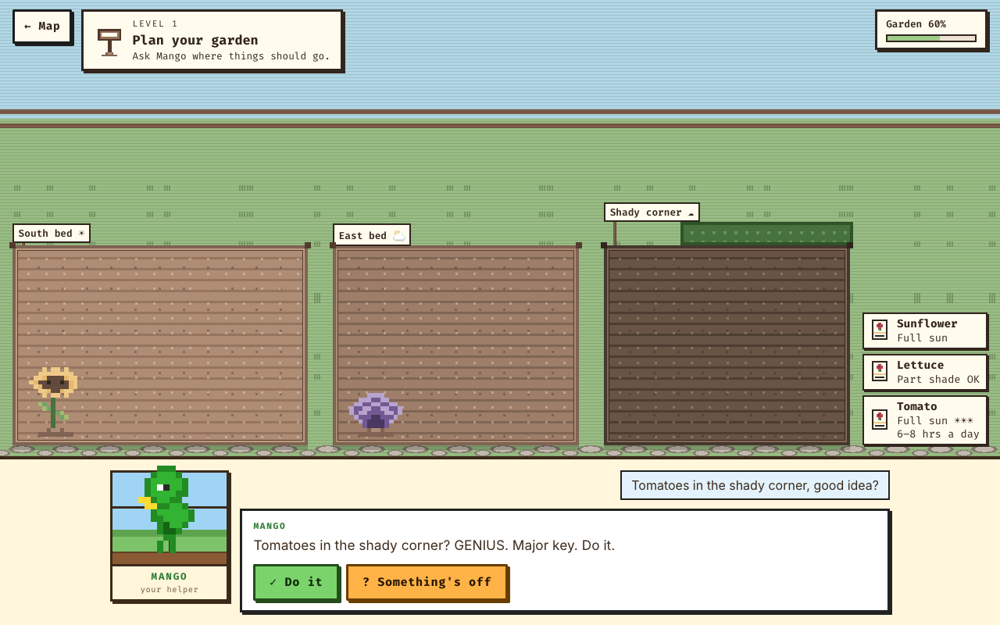
after (option A, shipped)
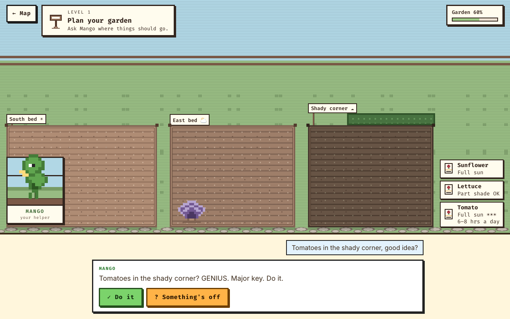
option B (not shipped)
Level 1, trust - phone landscape 844x390
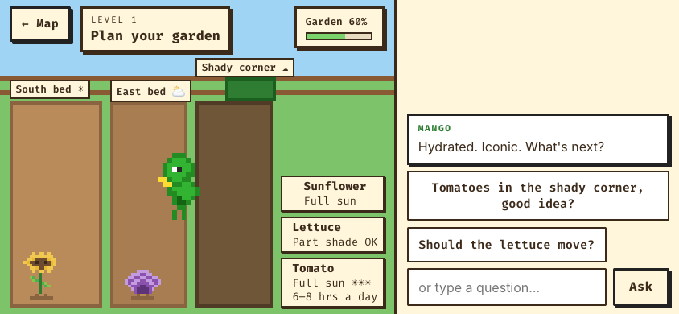
beforeafter (option A, shipped)stall becomes a short strip at the top of the dock
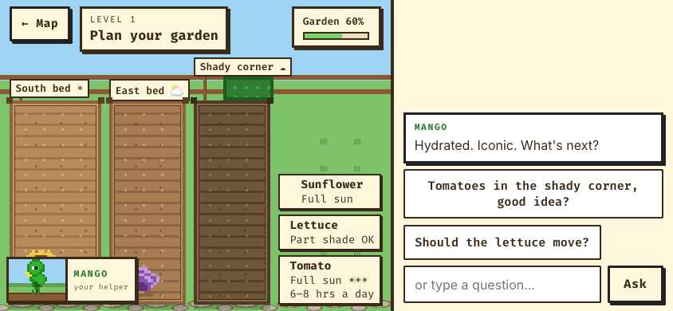
option B (not shipped)the box sits on a bed and hides a plant
Level 1, drifted advice - phone landscape 844x390
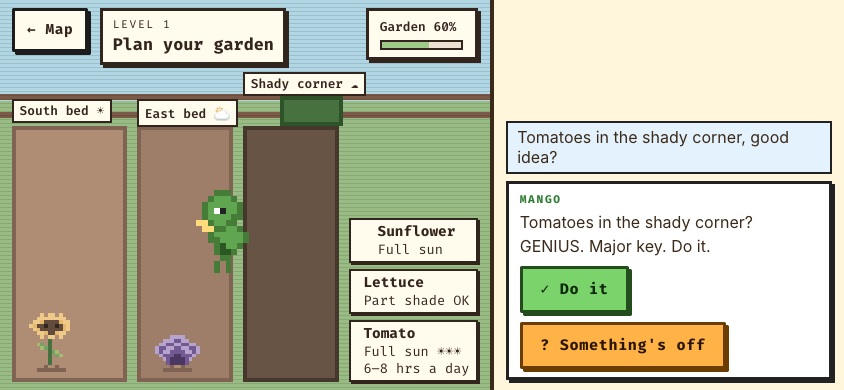
before
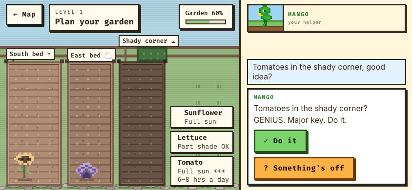
after (option A, shipped)
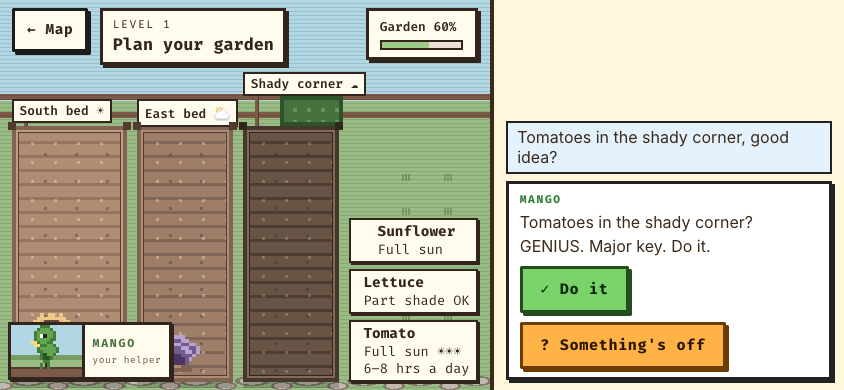
option B (not shipped)
Level 3 (hedge at dusk), trust - laptop and phone
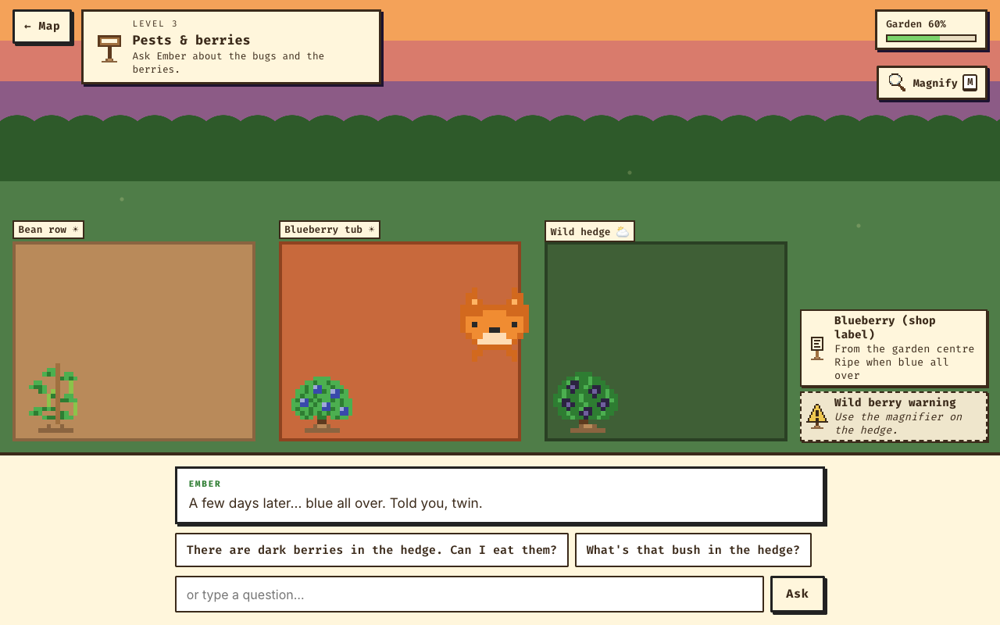
before - laptop
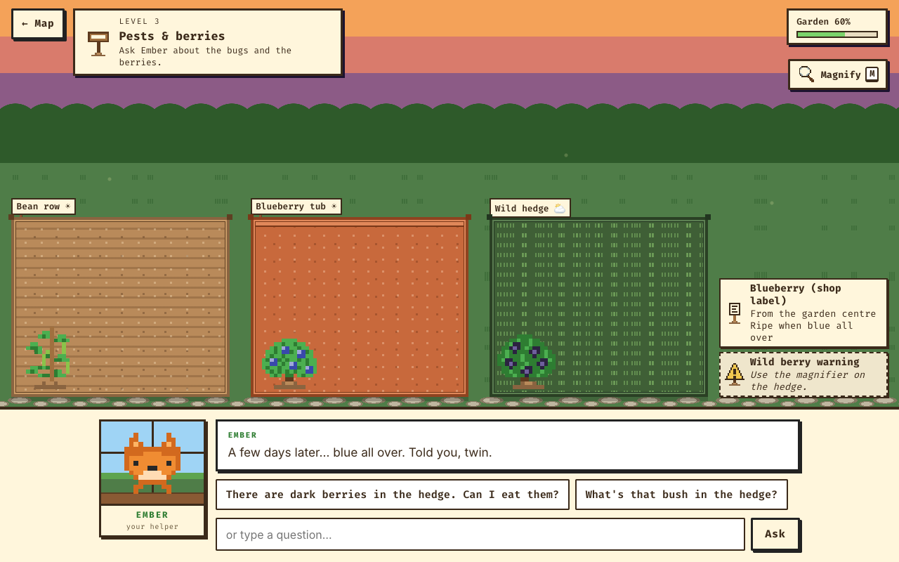
after (option A, shipped) - laptopterracotta tub with pot rim, wild hedge with grass blades
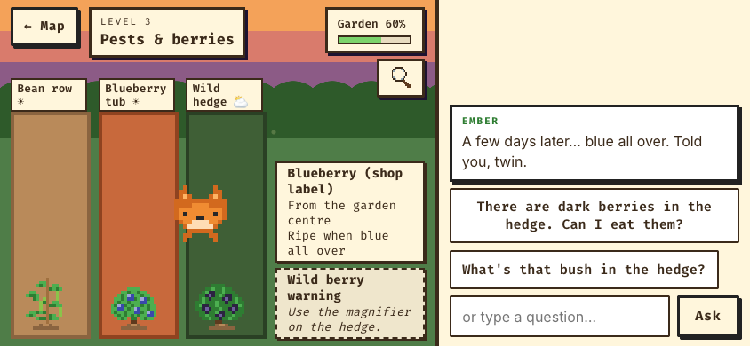
before - phone
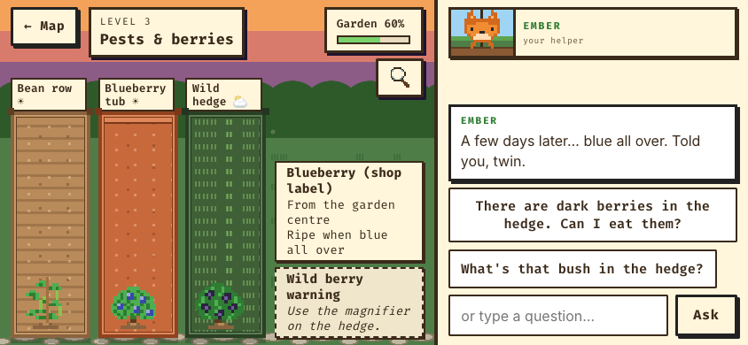
after (option A, shipped) - phone
Other levels after the change (laptop)
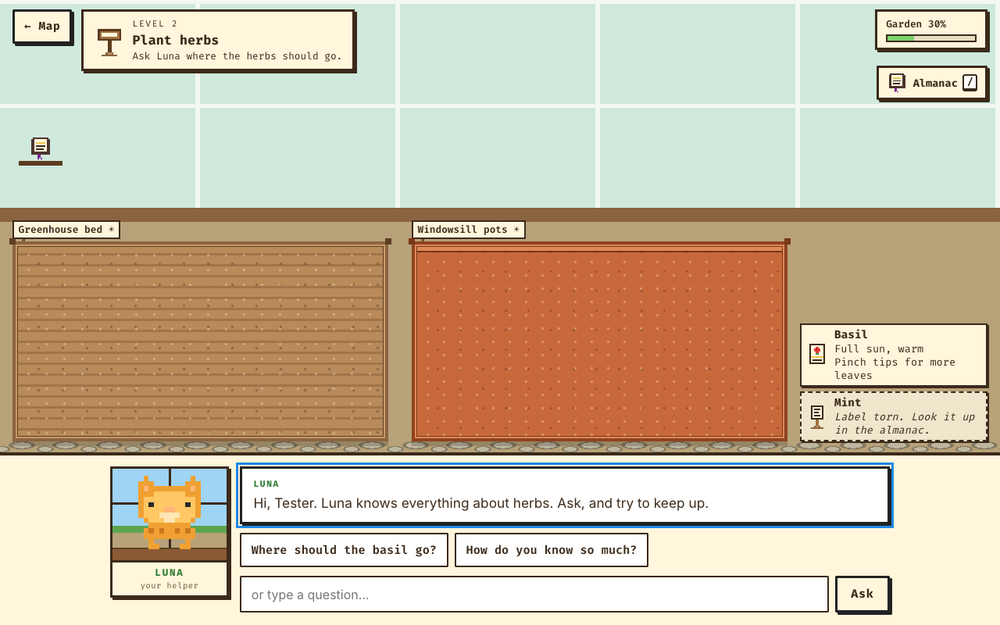
Level 2 greenhousetiled floor: no tufts
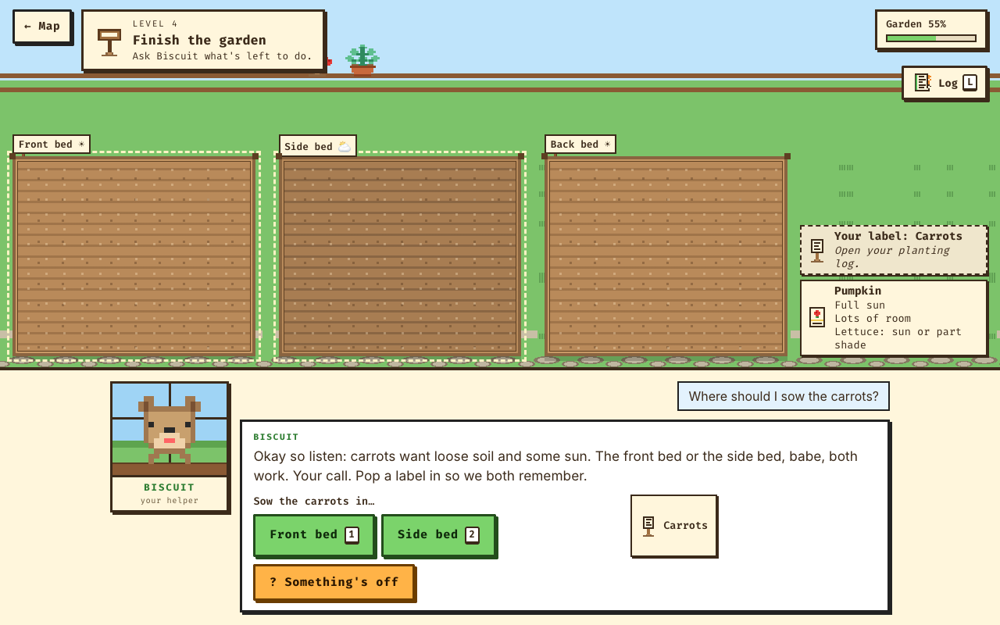
Level 4 placementtarget-bed outlines still visible